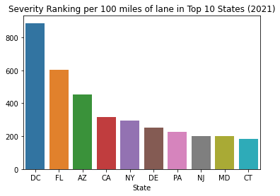

I have long been interested in the experiences of driving across the United States. Almost everyone I have met in the United States has their own anecdotes about how bad certain states are for drivers.
I decided to pull data that are available to me for a slightly tongue-in-cheek exercise to determine which US states actually are most unpleasant for drivers. There are several major factors that come to mind when considering "unpleasantness for drivers":
Traffic is the single biggest item. I don't think anyone would argue that commuting by car in San Francisco or New York City is pleasant. However, this is difficult to quantify across the entire US - in addition to requiring some measure of the speed of traffic flow, we would also need average trip lengths across the country to make a meaningful comparison. Additionally, when browsing Kaggle and the internet in general, I was unable to find a reaonably accessible dataset that would allow me to quantify the concept of "traffic."
I think most people would agree, though, that the presence of road construction and accidents both contribute to negative driving experiences. Especially when considering long distance driving, where a driver may cross multiple state boundaries, accident and construction frequency may be a better indicator of driving experiences than commuting traffic around major metropolitan areas. Personally, I have had several jobs that regularly required me to drive several hundred miles regularly, and I developed plenty of anecdotal assumptions while doing so (Ohio is OK, Pennsylvania is bad for construction, DC is bad for accidents, etc.). Lastly, I am interested in comparing US states against eachother; what is it like for a driver who is "just passing through?" I also think there is some fun to be had in a sports-like fashion by using states as the unit of comparison. I have a major grudge against Pennsylvania for the amount of traffic I have incurred on my many drives from Pittsburgh to Philadelphia, and I will try not to let this affect my judgement while conducting this analysis.
I was able to find two interesting datasets being hosted on Kaggle that pertain to accidents and construction, respectively:
These have been assembled and gratiously provided by Sobhan Moosavi and their research team:
Already, we can imagine simply comparing the frequency of accidents and construction (hereafter called "traffic events") across states. However, such a comparison would not be very fair if we did not account for the size of a state; we would obviously expect California to have more roads than Rhode Island, and so simply comparing their absolute number of traffic events is not fair. The Federal Highway Administration provides a yearly report on the number and length of roads across the United States - we can use this to normalize our traffic event counts, and we can even compare highway vs freeway events as well as urban vs rural roads:
Finally, and this is especially for fun and some light ribbing, I was able to easily locate the US Federal Transportaion Administration's yearly funding allotment to each state. I am very curious about comparing the "least-pleasant" states for driving with the amount of federal funding they receive:
Using the data I have been able to collect, I plan to try and answer the following questions:
I used the python programming language to import and analyze thesse data. If you wish to follow along yourself, you can find everything you would need to get started here. There are a few things worth pointing out about the data I am looking at, without being too detailed:
With that said, let's begin!
We can start by comparing the total counts of traffic events (defined as accidents plus construction events) across each state through 2021. We will not yet take the SIZE of a state into account - let's just look at total numbers to get started:

Total count of traffic events by states in 2021
This plot is meant to be a reality check that my methodology makes sense. The above looks correct for absolute values - big states lead the way. Also, LOL at Pennsylvania ranking just behind Texas for absolute counts.
To really get a feel for "unpleasantness," we should normalize by the amount of roads a state has. By using data from the US government, I can normalize the above values to "events per 100 miles of lane." Let's see how it looks when we do so.

Traffic event occurence per 100 imles of road by state in 2021
Interesting! Some important notes:
That being said, a big state like New York has about 75 events per year per 100 miles of two lane road. That... sounds reasonable, I think. Between fender benders and construction, I really think this sounds about right. This is almost CERTAINLY weighted heavily by more traveled roads, but I think this is a nice first swing.
Washington D.C. leads the way for most traffic incidents per 100 miles of lane! This alone seems to validate this methodology to me, as D.C. features some very difficult driving. Florida, California, and New York also make sense to me as ranking highly. I am a little surprised by Arizona's ranking, as its infrastructure is much newer than the other states listed here, but it's very populous. Interestingly, while Texas made the top ten list for overall events, it does NOT rank highly for events per 100 miles. The same is true for Illinois and Virginia, so I assume the size of these states normalizes for this. Texas is the second most populated state in the US, so I guess they deserve some credit for keeping traffic events down.
Let's look at these rankings when we include SEVERITY. Instead of just counting events, this uses the Severity field, where construction or traffic is ranked from 1 to 4. Note - I have NOT been able to determine what exactly these rankings mean, but it seems a shame to not use this data, especially for such a thumb-in-the-wind analysis as this one.

Traffic event occurence per 100 miles of road by state, weighted by severity, in 2021
Interesting again! The rankings are almost completely unchanged, with only New Jerey and Maryland swapping positions. It doesn't look like "severity" introduces a lot of changes in the rankings, so for the sake of simplicity and interpretability, we will only consider event occurences. This means that a fender bender carries the same weight as a fatal accident, but it does make our analysis easier to understand, so we will accept the tradeoff.

Accidents per 100 miles of road by state in 2021

Construction per 100 miles of road by state in 2021
Washington D.C. takes the top spot for everything! This seems a little unfair, as a better comparison for DC would probably just be a major city like New York or LA. However, "DC is a terrible place to drive" rolls off the tongue pretty easily, so I will keep it there.
Some interesting observations, now that we have everything plotted:
Overall, I think this analysis actually has some merit, as it matches some of my pre-existing notions about driving in these states.
Just for fun, let's look at everything!
Traffic events per 100 miles of road for every state in 2021
I find it amazing how low Texas appears on this list, given how populous it is. The Dakotas and Nebraska are, unsurprisingly, our least eventful states.
Now, let's separate highway and non-highway events.

Accidents per 100 miles of highway lane for every state in 2021
Accidents per 100 miles of surface street lane for every state in 2021
DC leads the way for accidents on and off the highway. After that, we see some interesting findings. South Carolina is bad for both, but ranks significantly worse for surface street accidents than for highway accidents. Conversely, New Jersey ranks poorly for highway accidents, but does NOT rank in the top 10 for surface street accidents. Again, some of my pre-existing biases are being confirmed here - who gets off the highway in Jersey?
However, the top 10 for accidents are largely the same - Florida and California fare poorly, and Maryland and Virginia rank poorly as well. It would probably be useful to show the ranks for these side by side.
These data are starting to get a little tricky to compare visually - it may be easier to print the data to a table and look at the rankings for each state. A lower rank means that a state has either more accidents, construction, or both.
| State | TotalEvents | AccidentsHighway | AccidentsRoad | ConstructionHighway | ConstructionRoad | FederalFunding |
|---|---|---|---|---|---|---|
| DC | 1 | 1 | 1 | 1 | 2 | 15 |
| FL | 2 | 3 | 2 | 4 | 3 | 9 |
| AZ | 3 | 15 | 10 | 30 | 1 | 12 |
| CA | 4 | 2 | 3 | 11 | 11 | 1 |
| NY | 5 | 11 | 11 | 10 | 4 | 2 |
| DE | 6 | 12 | 14 | 2 | 5 | 38 |
| PA | 7 | 14 | 8 | 3 | 6 | 8 |
| MD | 8 | 5 | 5 | 23 | 10 | 10 |
| NJ | 9 | 6 | 16 | 8 | 9 | 4 |
| CT | 10 | 4 | 18 | 6 | 14 | 16 |
| VA | 11 | 7 | 6 | 15 | 12 | 19 |
| CO | 12 | 29 | 36 | 5 | 8 | 22 |
| OR | 13 | 8 | 15 | 7 | 23 | 23 |
| LA | 14 | 18 | 7 | 9 | 16 | 27 |
| SC | 15 | 9 | 4 | 18 | 42 | 32 |
| IL | 16 | 36 | 26 | 25 | 7 | 3 |
| IN | 17 | 26 | 30 | 12 | 13 | 13 |
| TX | 18 | 24 | 13 | 19 | 18 | 6 |
| MN | 19 | 10 | 19 | 29 | 24 | 11 |
| WA | 20 | 21 | 23 | 17 | 19 | 5 |
| UT | 21 | 13 | 17 | 31 | 28 | 24 |
| NC | 22 | 17 | 9 | 36 | 35 | 20 |
| RI | 23 | 19 | 33 | 21 | 22 | 35 |
| ID | 24 | 32 | 22 | 22 | 20 | 41 |
| MI | 25 | 27 | 21 | 45 | 15 | 21 |
| AR | 26 | 30 | 31 | 14 | 30 | 36 |
| MA | 27 | 38 | 38 | 32 | 17 | 7 |
| GA | 28 | 25 | 35 | 27 | 26 | 14 |
| TN | 29 | 16 | 12 | 46 | 41 | 25 |
| MT | 30 | 20 | 20 | 20 | 45 | 44 |
| WY | 31 | 40 | 45 | 24 | 36 | 48 |
| OH | 32 | 43 | 29 | 28 | 25 | 18 |
| ME | 33 | nan | 48 | 37 | 21 | 39 |
| NM | 34 | 39 | 43 | 13 | 37 | 31 |
| NV | 35 | 31 | 32 | 16 | 43 | 28 |
| OK | 36 | 45 | 27 | 26 | 34 | 33 |
| WV | 37 | 22 | 25 | 33 | 38 | 43 |
| AL | 38 | 23 | 28 | 39 | 40 | 29 |
| WI | 39 | 46 | 47 | 40 | 29 | 26 |
| IA | 40 | 33 | 34 | 44 | 31 | 34 |
| KY | 41 | 41 | 44 | 38 | 32 | 30 |
| VT | 42 | nan | 46 | 48 | 27 | 49 |
| NH | 43 | 44 | 42 | 35 | 33 | 46 |
| KS | 44 | 35 | 40 | 34 | 39 | 37 |
| MO | 45 | 28 | 24 | 43 | 46 | 17 |
| MS | 46 | 34 | 37 | 41 | 44 | 40 |
| SD | 47 | 47 | 49 | 42 | 48 | 45 |
| NE | 48 | 42 | 41 | 47 | 47 | 42 |
| ND | 49 | 37 | 39 | 49 | 49 | 47 |
Ranking the states is fun! Some more interesting observations:
Just scanning these data, it looks like highway and non-highway events are SOMEWHAT correlated. This makes some sense - maybe construction and accidents are more regionally related than they are road-specific related. However, there is a chance that our data are also skewed here - maybe data collection is better in some states than in others. However, we still see less-traveled states near the bottom, so I do not doubt our data that much.
Let's look at a little correlation matrix. Generally speaking, a number closer to 1 in the table below means that row- and column- labels are correlated, and a number closer to 0 means they are not.
| TotalEvents | AccidentsHighway | AccidentsRoad | ConstructionHighway | ConstructionRoad | FederalFunding | |
|---|---|---|---|---|---|---|
| TotalEvents | 1 | 0.802 | 0.875 | 0.721 | 0.914 | 0.345 |
| AccidentsHighway | 0.802 | 1 | 0.835 | 0.673 | 0.535 | 0.451 |
| AccidentsRoad | 0.875 | 0.835 | 1 | 0.597 | 0.657 | 0.329 |
| ConstructionHighway | 0.721 | 0.673 | 0.597 | 1 | 0.525 | 0.247 |
| ConstructionRoad | 0.914 | 0.535 | 0.657 | 0.525 | 1 | 0.232 |
| FederalFunding | 0.345 | 0.451 | 0.329 | 0.247 | 0.232 | 1 |
The correlation matrix has some interesting findings for us.
This analysis began with a not-very-scentific question - what are the least pleasant states for driving? Accident and construction data have been made readily available by Sobhan Moosavi and their research team, and this seemed like a great place to start trying to come up with a numeric answer to this question.
I call the following statements "light conclusions," since this is a very preliminary analysis which just averages event occurences across entire states. Still, I think it is an interesting first step at quantifying how likely a person is to get stuck in traffic from a "traffic event":
This has been an entertaining exploration of these data. There were some surprises here, but the states which have lots of traffic events did not end up surpsing me all that much. If I wanted to spend more time here, I think the next step would definitely be to break this down into smaller regions, so we could account for major cities and surrounding rural areas. It would be great to get some "true" traffic information as well, but I think that is a tougher nut to crack. Here's to hoping that Pennsylvania gets those highways repaired!